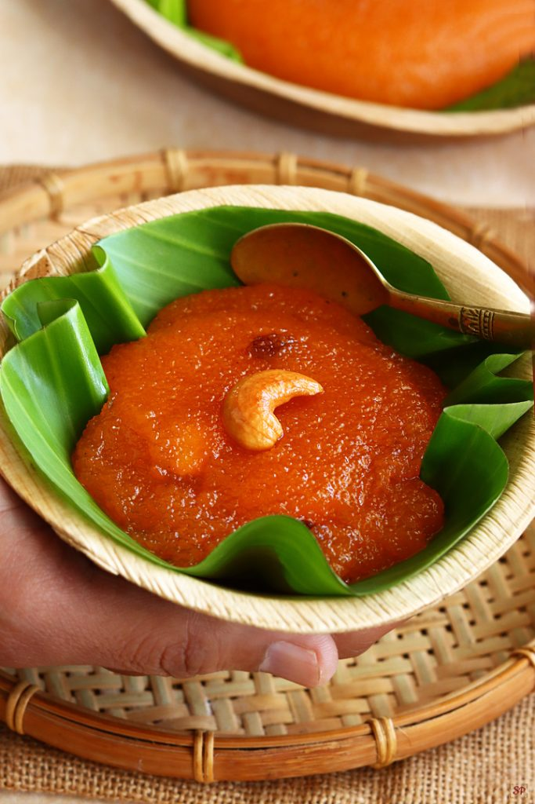

Kesari
Back to Homepage

Description
Kesari is a popular South Indian sweet, often served as a dessert or a celebratory dish during festivals. It is a bright, pudding-like dish, with its name derived from the Hindi word "kesar," meaning saffron, which gives it a distinctive orange or yellow color.
Ingredients
- rava
- sugar
- ghee
- water
- cardamom
- cashews and raisins
Steps
- Heat ghee in a pan and roast the rava until it turns golden brown and emits a nutty aroma.
- In a separate pot, bring water to a boil.
- Slowly add the boiling water to the roasted rava, stirring continuously to avoid lumps.
- Add sugar to the mixture and stir until it dissolves completely.
- Add cardamom powder for flavor.
- In a small pan, heat a little ghee and fry the cashews and raisins until golden, then add them to the kesari.
- Cook the mixture on low heat until it thickens to a pudding-like consistency.